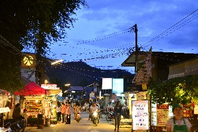
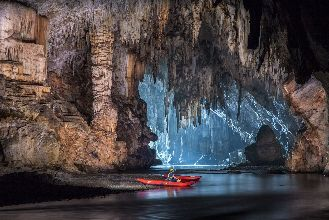
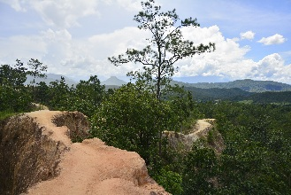
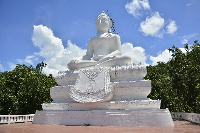
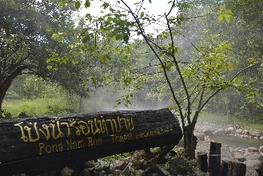
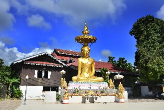
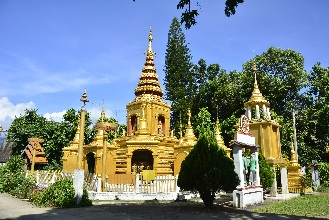
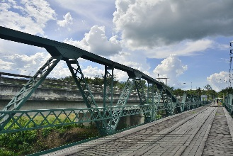
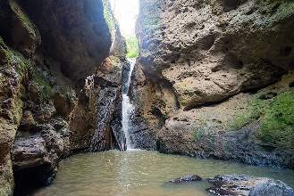
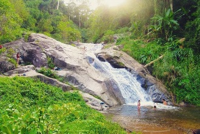

Pai (ปาย)
 Pai é uma simpatissíssima cidadezinha com menos de 2.300 habitantes (censo de 2006), localizada próxima à fronteira com Mianmar. A cidade tem esse nome devido ao rio Pai que passa por ela.A cidade vive predominantemente do turismo, oferecendo uma atmosfera relaxada, com uma cena turística majoritariamente mochileira, por vezes até meio "hippie".
O boom súbito nas construções de guesthouses e restaurantes a partir de 2006 resultou em muitas vagas livres na baixa temporada, mas pode ser difícil encontrar quartos na alta temporada (de Outubro à Fevereiro). Houve também um aumento no número de visitantes tailandeses após a cidade ser cenário de gravação do filme Pai in Love, de 2009.
A cidade, apesar de miníscula, tem bastante guesthouses e hotéis, e o centro se ocidentalizou um pouco, com restaurantes ocidentais, lojas de souverirs, casas de música ao vivo, estúdios de tatuagem e bares direcionados à mochileiros.
O principal motivo de visitar a cidade não é nenhuma atração específica, uma construção ou um local famoso, e sim sua atmosfera de vilarejo e sua tranquilidade.
Como chegar à Pai
* De carro: a Rota 1095, que liga Pai à Mae Hong Son (50km em linha reta, mas 110km pela estrada) e à Chiang Mai (135 km) possui belas paisagens entre as montanhas e leva algumas horas para ser percorrida, em virtude do excesso de curvas.* De ônibus: ônibus e microônibus vão para Chiang Mai (Arcade Bus Station) e Mae Hong Son. Os ônibus públicos levam cerca de 4 horas e custam ฿$ 75. Os microônibus particulares levam cerca de 3 horas. As passagens vendidas em guesthouses e agências de turismo custam entre ฿$ 150-180, embora a melhor opção seja ir direto ao guichê das minivans laranja e brancas e de ônibus no final da Arcade Bus Station (do outro lado da rua da nova estação de trem). Aqui as passagens custam ฿$ 150, e os ônibus estão em melhores condições, com freios em melhor estado para as inesquecíveis 762 curvas pela montanha. Além disso evita complicações com intermediários e comissões. Estes ônibus saem de hora em hora das 6:30 às 17:30. Na alta temporada os ônibus saem a cada 30 minutos.
* De avião: a Wisdom Airlines opera 2 voos diários entre Chiang Mai e Pai.
Se locomovendo na cidade
A cidade é bem pequena e melhor explorada a pé. Para ter mais rapidez e ir mais longe, você pode alugar bicicletas entre ฿$ 40-100 e motos a partir de ฿$ 80 em alguma das várias lojas da rua principal. Na rodoviária da cidade você encontra um mapa com a localização de várias guesthouses.Fique seguro
Se a sua acomodação for longe da área dos bares, cuidado ao voltar para o hotel a noite, cuidado com os cães que andam pelas ruas à noite. Mantenha uma distância segura e se eles ameaçarem te atacar, faça barulho ou se abaixe fingindo que vai pegar uma pedra para assustá-los.As atrações de Pai
Caverna Lod
Enorme caverna com milhares de estalagtites e estalagmites, além de lagos submersos, rios e grandes áreas abertas. A visita leva uns 90 minutos, seguindo por
escadas e trilhas. Você precisa trazer alguma tocha ou lanterna. Caso não tenha, eles alugam uma por ฿$ 100 na entrada.
No anoitecer, você pode ver o vôo dos morcegos.

Local: próximo da vila Soppong.
Voltar à lista
Cânion de Pai
Cumes estreitos com vales íngremes e com os 2 lados cheios de pinheiros. A queda de 50m de ambos os lados e a mata ao redor são impressionantes. Mas tome cuidado,
pois o caminho é bem estreito em alguns
pontos e requer uma escalada em outros.
Um conjunto de degraus até uma plataforma de visualição oferece uma forma segura de admirar o cenário.
Um conjunto de degraus até uma plataforma de visualição oferece uma forma segura de admirar o cenário.

Local: há 8km de Pai.
Voltar à lista
Wat Pra That Mae Yen
Templo no alto de um morro, popular entre turistas, sobretudo por suas belas vistas da cidade.

Local: seguindo a Raddamrong Road para fora da cidade.
Voltar à lista
Águas Termais de Tha Pai
Essas águas termais chegam a até 80°C, mas em algumas área estas águas encontram águas mais frias, deixando-as em uma temperatura apropriada para o banho. Você
pode tomar um banho em uma piscina de água mineral no Thapai Spa por ฿$ 80.

Local: sinalizado desde a Chiang Mai Rd.
Horário: o local fecha às 18:00, mas se você tiver entrado antes, pode ficar até mais tarde.
Entrada: ฿$ 200.
Voltar à lista
Horário: o local fecha às 18:00, mas se você tiver entrado antes, pode ficar até mais tarde.
Entrada: ฿$ 200.
Wat Luang
Importante templo da cidade, construído em 1803. Suas construções mais significantes são o chedi (ou thaat) em
estilo Mon, com estátuas de leões nos 4 cantos e o salão dos sermões, com o o teto com vários níveis.

Local: rua Khetkelang.
Voltar à lista
Wat Klang
Templo antigo, com várias construções com imagens de Buda e um museu do templo. Há um chedi com vasos na base. Cada vaso tinha uma imagem
simbolizando cada dia da semana. Na parte norte do templo há uma imagem de Buda deitado.

Local: sub distrito de Viengtai, Pai.
Voltar à lista
Ponte Memorial da 2ª Guerra
A ponte original do local foi construída pelos invasores japoneses. A atual ponte de ferro que fica ao lado da rodovia principal foi montada nesta posição atual
mais recentemente.
Devido ao cânion ao lado, a ponte evita qualquer comparação com a famosa ponte sobre o Rio Kwai, em Kanchanaburi.
Devido ao cânion ao lado, a ponte evita qualquer comparação com a famosa ponte sobre o Rio Kwai, em Kanchanaburi.

Local: há 8km de Pai.
Voltar à lista
Cachoeira Pam Bok
Bela cachoeira isolada, com grandes encostas a cercando, o que faz sombra e ajuda a escapar do calor durante a época mais quente do ano.

Cachoeira Mo Paeng
Um pouco mais acessível que a maioria das cachoeiras de Pai. Possui vários níveis e flui por uma área de grande beleza natural. É bastante popular por suas
"piscinas" naturais e por suas pedras lisas usadas como escorregadores.

Local: 12km à oeste de Pai.
Voltar à lista